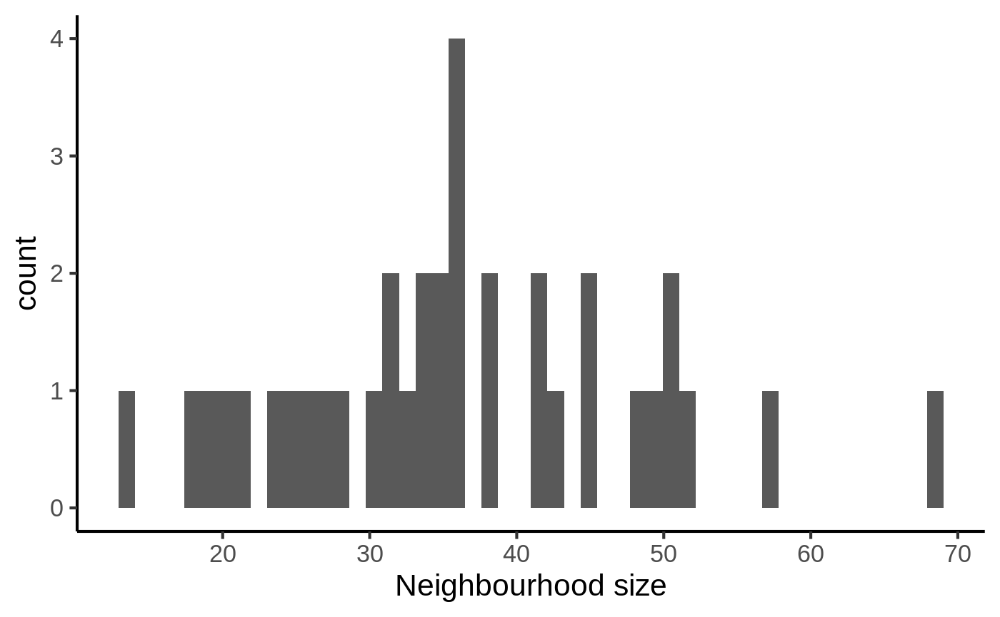
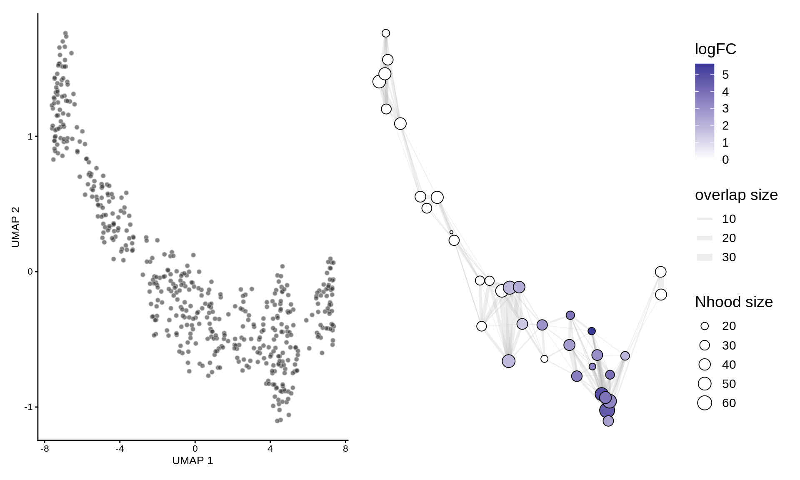

milo_demo.RmdMilo is a tool for analysis of complex single cell datasets generated from replicated multi-condition experiments, which detects changes in composition between conditions. While differential abundance (DA) is commonly quantified in discrete cell clusters, Milo uses partally overlapping neighbourhoods of cells on a KNN graph. Starting from a graph that faithfully recapitulates the biology of the cell population, Milo analysis consists of 3 steps:
In this vignette we will elaborate on how these steps are implemented in the miloR package.
For this demo we will use a synthetic dataset simulating a developmental trajectory, generated using dyntoy.
data("sim_trajectory", package = "miloR") ## Extract SingleCellExperiment object traj_sce <- sim_trajectory[['SCE']] ## Extract sample metadata to use for testing traj_meta <- sim_trajectory[["meta"]] ## Add metadata to colData slot colData(traj_sce) <- DataFrame(traj_meta)
For DA analysis we need to construct an undirected KNN graph of single-cells. Standard single-cell analysis pipelines usually do this from distances in PCA. We normalize and calculate principal components using scater. I also run UMAP for visualization purposes.
For differential abundance analysis on graph neighbourhoods we first construct a Milo object. This extends the SingleCellExperiment class to store information about neighbourhoods on the KNN graph.
The Milo constructor takes as input a SingleCellExperiment object.
traj_milo <- Milo(traj_sce) reducedDim(traj_milo, "UMAP") <- reducedDim(traj_sce, "UMAP") traj_milo
## class: Milo
## dim: 500 500
## metadata(0):
## assays(2): counts logcounts
## rownames(500): G1 G2 ... G499 G500
## rowData names(0):
## colnames: NULL
## colData names(5): cell_id group_id Condition Replicate Sample
## reducedDimNames(2): PCA UMAP
## spikeNames(0):
## altExpNames(0):
## nhoods dimensions(1): 0
## nhoodCounts dimensions(2): 1 1
## nhoodDistances dimension(1): 0
## graph names(0):
## nhoodIndex names(1): 0
## nhoodExpression dimension(2): 1 1
## nhoodReducedDim names(0):
## nhoodGraph names(0):
## nhoodAdjacency dimension(0):We can use the zellkonverter package to make a SingleCellExperiment object from an AnnData object stored as h5ad file.
library(zellkonverter) # Obtaining an example H5AD file. example_h5ad <- system.file("extdata", "krumsiek11.h5ad", package = "zellkonverter") example_h5ad_sce <- readH5AD(example_h5ad) example_h5ad_milo <- Milo(example_h5ad_sce)
The Seurat package includes a converter to SingleCellExperiment.
library(Seurat) data("pbmc_small") pbmc_small_sce <- as.SingleCellExperiment(pbmc_small) pbmc_small_milo <- Milo(pbmc_small_sce)
We need to add the KNN graph to the Milo object. This is stored in the graph slot, in igraph format. The miloR package includes functionality to build and store the graph from the PCA dimensions stored in the reducedDim slot.
traj_milo <- buildGraph(traj_milo, k = 10, d = 30)
## Constructing kNN graph with k:10In progress: we are perfecting the functionality to add a precomputed KNN graph (for example constructed with Seurat or scanpy) to the graph slot using the adjacency matrix.
We define the neighbourhood of a cell, the index, as the group of cells connected by an edge in the KNN graph to the index cell. For efficiency, we don’t test for DA in the neighbourhood of every cell, but we sample as indices a subset of representative cells, using a KNN sampling algorithm used by Gut et al. 2015.
For sampling you need to define a few parameters:
prop: the proportion of cells to randomly sample to start with (usually 0.1 - 0.2 is sufficient)k: the k to use for KNN refinement (we recommend using the same k used for KNN graph building)d: the number of reduced dimensions to use for KNN refinement (we recommend using the same d used for KNN graph building)refined indicated whether you want to use the sampling refinement algorith, or just pick cells at random. The default and recommended way to go is to use refinement. The only situation in which you might consider using random instead, is if you have batch corrected your data with a graph based correction algorithm, such as BBKNN, but the results of DA testing will be suboptimal.traj_milo <- makeNhoods(traj_milo, prop = 0.1, k = 10, d=30, refined = TRUE)
## Checking valid object## Warning in .refined_sampling(random_vertices, X_reduced_dims, k): Rownames not
## set on reducedDims - setting to row indicesOnce we have defined neighbourhoods, it’s good to take a look at how big the neighbourhoods are (i.e. how many cells form each neighbourhood). This affects the power of DA testing. We can check this out using the plotNhoodSizeHist function. Empirically, we found it’s best to have a distribution peaking between 50 and 100. Otherwise you might consider rerunning makeNhoods increasing k and/or prop (here the distribution looks ludicrous because it’s a small dataset).
plotNhoodSizeHist(traj_milo)

Now we have to count how many cells from each sample are in each neighbourhood. We need to use the cell metadata and specify which column contains the sample information.
traj_milo <- countCells(traj_milo, meta.data = data.frame(colData(traj_milo)), sample="Sample")
## Checking meta.data validity## Setting up matrix with 36 neighbourhoods## Counting cells in neighbourhoodsThis adds to the Milo object a n \times m matrix, where n is the number of neighbourhoods and \(m\) is the number of experimental samples. Values indicate the number of cells from each sample counted in a neighbourhood. This count matrix will be used for DA testing.
head(nhoodCounts(traj_milo))
## 6 x 6 sparse Matrix of class "dgCMatrix"
## B_R1 A_R1 A_R2 B_R2 B_R3 A_R3
## 1 11 2 5 13 17 2
## 2 12 1 . 11 10 2
## 3 3 . 1 9 13 .
## 4 15 . 1 22 29 1
## 5 13 5 3 14 16 1
## 6 9 6 7 7 6 10Now we are all set to test for differential abundance in neighbourhoods. We implement this hypothesis testing in a generalized linear model (GLM) framework, specifically using the Negative Binomial GLM implementation in edgeR.
We first need to think about our experimental design. The design matrix should match samples to a condition of interest. In this case the Condition is the covariate we are going to test for.
traj_design <- data.frame(colData(traj_milo))[,c("Sample", "Condition")] traj_design <- distinct(traj_design) traj_design
## Sample Condition
## 1 B_R1 B
## 2 A_R1 A
## 3 A_R2 A
## 4 B_R2 B
## 5 B_R3 B
## 6 A_R3 AMilo uses an adaptation of the Spatial FDR correction introduced by cydar, which accounts for the overlap between neighbourhoods. Specifically, each hypothesis test P-value is weighted by the reciprocal of the kth nearest neighbour distance. To use this statistic we first need to store the distances between nearest neighbors in the Milo object.
traj_milo <- calcNhoodDistance(traj_milo, d=30)
Now we can do the test, explicitly defining our experimental design.
da_results <- testNhoods(traj_milo, design = ~ Condition, design.df = traj_design)
## Performing spatial FDR correction withk-distance weightingPerforming spatial FDR correction withneighbour-distance weightingPerforming spatial FDR correction withedge weightingPerforming spatial FDR correction withvertex weightingPerforming spatial FDR correction withnone weightingThis calculates a Fold-change and corrected P-value for each neighbourhood, which indicates wheather there is significant differential abundance between conditions.
## logFC logCPM F PValue FDR Nhood SpatialFDR
## 31 -0.06825178 18.78491 0.003497229 0.9529247 0.9529247 31 0.9529247
## 9 -0.15157840 19.18524 0.043719291 0.8346722 0.8770780 9 0.8811436
## 12 -0.13116723 19.72564 0.094539515 0.7808573 0.8770780 12 0.8811436
## 20 -0.09947561 19.53278 0.034592108 0.8527147 0.8770780 20 0.8811436
## 22 0.11712737 19.46188 0.054221958 0.8266405 0.8770780 22 0.8811436
## 25 -0.11490917 20.07120 0.075454714 0.7839480 0.8770780 25 0.8811436To visualize DA results, we build an abstracted graph of neighbourhoods that we can superimpose on the single-cell embedding.
traj_milo <- buildNhoodGraph(traj_milo)
## Calculating nhood adjacencyplotUMAP(traj_milo) + plotNhoodGraphDA(traj_milo, da_results, alpha=0.05) + plot_layout(guides="collect")

Session Info
## R version 3.6.3 (2020-02-29)
## Platform: x86_64-pc-linux-gnu (64-bit)
## Running under: Ubuntu 18.04.3 LTS
##
## Matrix products: default
## BLAS: /usr/lib/x86_64-linux-gnu/blas/libblas.so.3.7.1
## LAPACK: /usr/lib/x86_64-linux-gnu/openblas/liblapack.so.3
##
## locale:
## [1] LC_CTYPE=en_US.UTF-8 LC_NUMERIC=C
## [3] LC_TIME=en_US.UTF-8 LC_COLLATE=en_US.UTF-8
## [5] LC_MONETARY=en_US.UTF-8 LC_MESSAGES=en_US.UTF-8
## [7] LC_PAPER=en_US.UTF-8 LC_NAME=C
## [9] LC_ADDRESS=C LC_TELEPHONE=C
## [11] LC_MEASUREMENT=en_US.UTF-8 LC_IDENTIFICATION=C
##
## attached base packages:
## [1] parallel stats4 stats graphics grDevices utils datasets
## [8] methods base
##
## other attached packages:
## [1] patchwork_1.0.1 dplyr_1.0.2
## [3] scater_1.14.6 ggplot2_3.3.2
## [5] SingleCellExperiment_1.8.0 SummarizedExperiment_1.16.1
## [7] DelayedArray_0.12.3 BiocParallel_1.20.1
## [9] matrixStats_0.56.0 Biobase_2.46.0
## [11] GenomicRanges_1.38.0 GenomeInfoDb_1.22.1
## [13] IRanges_2.20.2 S4Vectors_0.24.4
## [15] BiocGenerics_0.32.0 miloR_0.1.0
## [17] edgeR_3.28.1 limma_3.42.2
## [19] BiocStyle_2.14.4
##
## loaded via a namespace (and not attached):
## [1] bitops_1.0-6 fs_1.5.0 rprojroot_1.3-2
## [4] tools_3.6.3 backports_1.1.9 R6_2.4.1
## [7] irlba_2.3.3 vipor_0.4.5 uwot_0.1.8
## [10] colorspace_1.4-1 withr_2.2.0 tidyselect_1.1.0
## [13] gridExtra_2.3 bit_4.0.4 compiler_3.6.3
## [16] BiocNeighbors_1.4.2 desc_1.2.0 labeling_0.3
## [19] bookdown_0.20 scales_1.1.1 pkgdown_1.5.1
## [22] stringr_1.4.0 digest_0.6.25 rmarkdown_2.5
## [25] XVector_0.26.0 pkgconfig_2.0.3 htmltools_0.5.0
## [28] rlang_0.4.7 rstudioapi_0.11 FNN_1.1.3
## [31] DelayedMatrixStats_1.8.0 farver_2.0.3 generics_0.0.2
## [34] gtools_3.8.2 RCurl_1.98-1.2 magrittr_1.5
## [37] BiocSingular_1.2.2 GenomeInfoDbData_1.2.2 Matrix_1.2-18
## [40] Rcpp_1.0.5 ggbeeswarm_0.6.0 munsell_0.5.0
## [43] viridis_0.5.1 lifecycle_0.2.0 stringi_1.4.6
## [46] yaml_2.2.1 ggraph_2.0.3 MASS_7.3-51.5
## [49] zlibbioc_1.32.0 grid_3.6.3 ggrepel_0.8.2
## [52] crayon_1.3.4 lattice_0.20-40 splines_3.6.3
## [55] cowplot_1.0.0 graphlayouts_0.7.0 locfit_1.5-9.4
## [58] knitr_1.30 pillar_1.4.6 igraph_1.2.5
## [61] glue_1.4.1 evaluate_0.14 BiocManager_1.30.10
## [64] vctrs_0.3.2 tweenr_1.0.1 gtable_0.3.0
## [67] purrr_0.3.4 polyclip_1.10-0 tidyr_1.1.1
## [70] assertthat_0.2.1 xfun_0.19 ggforce_0.3.2
## [73] rsvd_1.0.3 tidygraph_1.2.0 RSpectra_0.16-0
## [76] viridisLite_0.3.0 tibble_3.0.3 beeswarm_0.2.3
## [79] memoise_1.1.0 statmod_1.4.34 ellipsis_0.3.1